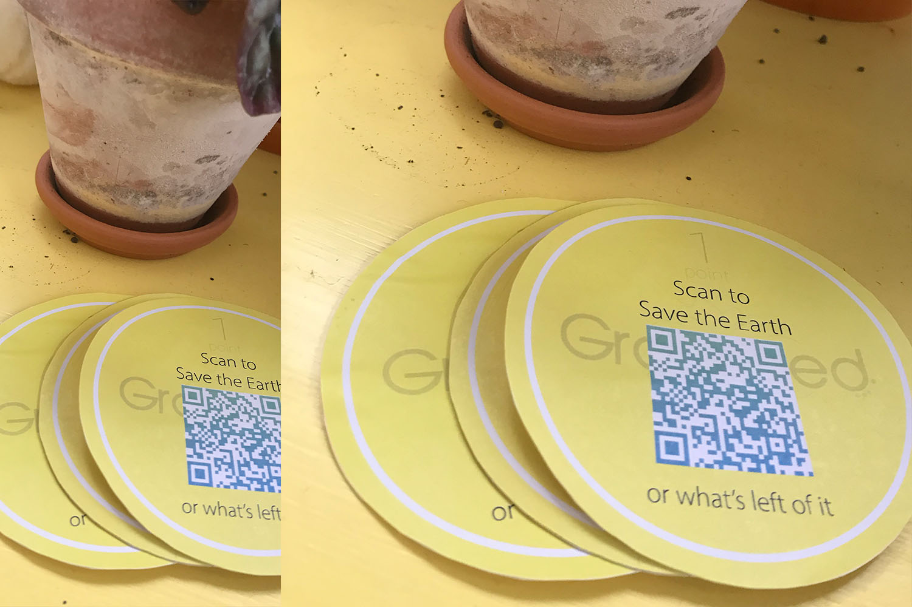

The internet Yami-Ichi “Internet Black Market” is a flea market where people can share and buy Internet related things in real life. In this weird market, you can browse through the booths and find the amazing and the useless—in an ironic and humorous atmosphere reminiscent of the early Internet era.
The idea of “browsing” face to face and communicating it with my project challenged me the most. Since my project is mostly based online, I had trouble interpreting physically. So I brainstormed the main idea and key points of my project and that is the QR code and earning points by dispoing waste.
My first idea was to create a physical poster adverting Grounded with an activated QR code that will connect through my third project. However, I realised that I can interpret my project better physically if I can show the basic prototype of the ‘Grounded’ bin itself.
So my final idea was to build a mini non-digital prototype of the bin. Interpreting the Yami Ichi concept of irony and humour as well as the concept of creating a physical object/meme for my project; instead of the whole idea of the user disposing their waste and having a QR code appear on the screen and them scanning it to earn points; I interpreted it by having a physical point system instead. This point system is shown below. It has the basic concept of the user ‘disposing their waste’ and collecting a point from the envelope. The actual point will have a QR code where users can scan it with their mobile phones and it will take them straight to the ‘Grounded’ website.
